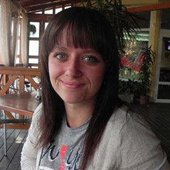
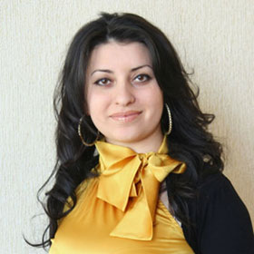
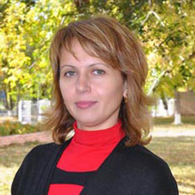

Профессионализм, энтузиазм, стремление к совершенству учителей нашей онлайн-школы делают уроки эффективными, интересными и запоминающимися.
Преподавательская команда следует такому направлению: использование творческой тактики в процессе занятий, повышение мотивации, улучшение письменных и разговорных навыков.
Мы серьезно относимся к профессиональному усовершенствованию преподавателей, они регулярно посещают современные, эффективные тренинги, которые насыщают новыми знаниями и вырабатывают полезные навыки в обучении английскому.
-

За время работы Яна показала себя как ответственный учитель, организатор многих творческих начинаний. Она работает с самой разнообразной аудиторией: начиная с самых маленьких и заканчивая взрослыми учениками. В своей работе использует учебно-методические комплексы британского издательства «Лонгман». В течение последних лет Яна работает по методике интенсивного обучения иностранным языкам, в основе которого лежит обучение полилогу и ролевой игре. Яна увлекается велоспортом, катанием на роликах, легкой атлетикой и чтением научной фантастики.
Яна филолог
возраст: 22 года
стаж: 5 лет
сертификаты: IELTS
-
Светлана – энергичный и коммуникабельный преподаватель с опытом работы более 8 лет. Занимается преподавательской деятельностью еще со студенческих лет, умеет находить индивидуальный подход как к взрослым, так и детям. Для Светланы преподавание – это способ постоянно расширять горизонты знаний и мировосприятия своих учеников. Каждый урок старается проводить в комфортной и дружеской атмосфере с использованием творческого подхода. Большое внимание уделяет не только грамматике, но и лексике, а также пониманию живой речи и и развитию речевых навыков.
Светланафилолог
Возраст: 28 лет
Стаж: 8 лет
Сертификаты: IELTS TOEFL ESL
-
Елена работала несколько лет, выполняя временные заказы по переводам с английского и немецкого языков на русский и наоборот. У нее опыт проживания за границей и общения с носителями языка, как личного, так и по интернету. Елена – ответственный и требовательный человек, делает акцент на достижении успеха, используя для этого различные методы и подходы. Приветствует грамотность, исполнительность, заинтересованность. Проявляет терпение, желание помочь, дружелюбие и поддержку.
Еленалингвист
Возраст: 30 лет
Стаж: 3 года
Сертификаты:
-
Анна — открытый, коммуникабельный, активный преподаватель, который способен найти контакт с любым учеником. Заинтересовалась иностранными языками с раннего детства. Анна имеет большой опыт общения с носителями языка. Чувство юмора и открытость помогают ей создать непринужденную атмосферу на уроке. Анна поможет вам без труда преодолеть языковой барьер. Увлекается кулинарией, чтением и музыкой.
Аннафилолог
Возраст: 23 года
Стаж: 5 лет
Сертификаты: TOEFL
-
My name is Michael I am from the USA, state Florida. I have a wife and two lovely children. I am a qualified native English teacher. I understand how hard it is learning languages as my wife is Russian speaking woman and she teaches me some Russian too. So if you are afraid to make first steps with native speaker because you can’t understand something I’ll do my best to make you feel comfortable. I will help to reach your goals in fluent English and also to learn business English, as my second education is economical. I enjoy sport, reading books and of course teaching English. I love people! I am looking forward to meet you!
Michaelnative speaker
Возраст: 50 лет
Стаж: 18 лет
Сертификаты:
-
Алена – ответственный, квалифицированный и творческий преподаватель с большими опытом как преподавателя так и переводчика. Основной упор делает на разговорный английский. Благодаря ей вы заговорите уже на втором-третьем занятии. Алёна очень общительный и открытый человек, что позволяет ей найти подход к каждому студенту. Интересуется культурой и искусством, а также участвует в выставках украшений ручной работы с собственными изделиями.
Аленафилолог
Возраст: 30 лет
Стаж: 5 лет
Сертификаты: TOEFL, IELTS
-
Виталия - трудолюбивый, целеустремленный и квалифицированный преподаватель английского языка с опытом преподавания более 5 лет. На уроках старается помочь ученику приобрести уверенность в своих силах. Постоянно совершенствует свои знания и повышает профессиональный уровень. Виталия увлекается путешествиями, активным отдыхом, иногда ходит в походы в горы.
Виталияфилолог
Возраст: 33 года
Стаж: 8 лет
Сертификаты: IELTS TOEFL ESL
-

Татьяна – жизнерадостный, общительный и энергичный преподаватель. Имеет опыт работы с разными возрастными категориями. Обожает работать с людьми, умеет увлечь и заинтересовать студента. Полгода жила в американской семье, прошла ознакомительное обучение в американском колледже. Ведет здоровый образ жизни, занимается танцами, фитнесом и игрой на гитаре.
Татьянафилолог
Возраст: 31 год
Стаж: 6 лет
Сертификаты: TOEFL
-
Анна – трудолюбивый преподаватель и переводчик английского языка. Преподает английский с 2009 года, как взрослым, так и детям. Большой опыт преподавания дает Анне возможность найти подход к любому студенту. Анна всегда старается привить своим студентам любовь и легкость в изучении английского языка. Увлекается бальными, латиноамериканскими танцами, историческими романами, путешествиями.
Анна филолог
возраст: 29 лет
стаж: 6 лет
сертификаты:
-
Марина квалифицированный и любящий свое дело педагог, имеющий опыт преподавания как со взрослыми так и с детьми разных уровней знаний. Начала преподавальческую практику еще во время обучения в университете. Несколько лет занималась устными переводами. Марина всегда старается придать своим урокам позитивную атмосферу, сделать их динамичными и креативными. Свободное время любит проводить, занимаясь фитнесом, йогой и велосипедом.

Маринафилолог
Возраст: 26 лет
Стаж: 5 лет
Сертификаты: TOEFL
-
Hello!! My name is Kathy. I am American and I am a profession teacher of English as a second language! If you are the beginner or advance level speaker we will find for sure what to discuss and how to improve your English!!! I have Masters in teaching TOEFL and I have a Doctorate in Finance Education. I can prepare you to exams. I have taught at different Language Colleges and courses. My lessons are very creative and fun. At the lessons we have discussions, games and I know how to make you talk without mistakes! See you at our lessons!
Kathynative speaker
Возраст: 53 года
Стаж: 23 года
Сертификаты:
-
Светлана – опытный преподаватель разговорного английского с 6 летним стажем. Будучи студенткой, проходила учебную практику в США, что дало Светлане полное погружение в языковую среду. Позитивная и дружественная атмосфера, использование современных методик преподавания, разнообразные игры помогут вам с легкостью заговорить на английском языке. Светлана имеет разные хобби (верховая езда, история, рукоделие) но главным своим увлечением считает английский язык.
Светланафилолог
Возраст: 26 лет
Стаж: 6 лет
Сертификаты:
-
Анастасия - молодой развивающийся преподаватель, с детства увлекается изучением английского языка. Преподает английский язык, как взрослым, так и детям. Анастасия старается разработать каждый урок так, чтобы он был максимально полезным, запоминающимся и информативным. Большую часть времени на уроках уделяет говорению, это позволяет быстро преодолеть языковой барьер. В свободное время занимается фотографией и рисованием.
Анастасиялингвист
Возраст: 23 года
Стаж: 4 года
Сертификаты: TOEFL, IELTS
-
Юлия - жизнерадостный, энергичный, полный оптимизма преподаватель с опытом преподавания более 5лет. Руководствуется принципом «Не бывает ничего невозможного. Главное - желание и вера в собственные силы.» Юлия считает, что человек уникален по своей природе, поэтому к каждому студенту у нее особый подход. Помимо английского языка Юлия интересуется музыкой и живописью.
Юлияфилолог
Возраст: 23 года
Стаж: 5 лет
Сертификаты:
-

Ирина - дипломированный и любящий свое дело педагог с большим опытом. Давала частные уроки детям и взрослым еще, будучи студенткой университета. Свои занятия Ирина строит на основе коммуникативного подхода, что позволяет студенту начать говорить на английском с первых уроков, избавиться от языкового барьера. В качестве хобби Ирина предпочитает активный отдых, туризм и путешествия, также занимается спортивными танцами.
Иринафилолог
Возраст: 32 года
Стаж: 9 лет
Сертификаты: IELTS TOEFL ESL
-
Дмитрий – трудолюбивый, организованный, целеустремленный преподаватель. Дмитрий всегда ориентируется на потребности учащегося, творчески подходит к планированию урока, собирает материалы из разных источников, отталкиваясь от того, что хочет ученик от занятий. Он легко находит контакт с любым студентом и умеет поддержать беседу на различные темы. В свободное время занимается греблей и бегом, также любит кататься на лыжах.
Дмитрийлингвист
Возраст: 27 лет
Стаж: 5 лет
Сертификаты:
-
Мария – коммуникабельный, трудолюбивый и энергичный преподаватель и так же всесторонне развитая личность. Она любит кататься на велосипеде, путешествовать, также изучает культуру и историю Китая. Но главным своим увлечением считает английский язык и преподавание. Мария убеждена, что каждый человек способен говорить на иностранном языке, и опыт ее преподавания подтверждает это. Главное – не бойтесь начинать. Не бойтесь сделать первый шаг! Не бойтесь задавать вопросы, не бойтесь делать ошибок, не бойтесь говорить – и тогда ваша мечта знать английский язык в совершенстве обязательно осуществится!
Марияфилолог
Возраст: 29 лет
Стаж: 8 лет
Сертификаты: IELTS, ESL
-
Константин - дипломированный преподаватель английского языка с существенным педагогическим опытом. В студенчестве провел 4 месяца в Америке, где, благодаря обилию разговорной практики, усовершенствовал навыки говорения и произношение. На уроках большую часть времени уделяет говорению, что позволяет быстро преодолеть языковой барьер. Конечно и чтение, письмо и грамматика не остаются без должного внимания! Имеет ряд хобби основное из которых – кайтинг.
Константинфилолог
Возраст: 26 лет
Стаж: 5 лет
Сертификаты:
-
Ольга перспективный, открытый для общения преподаватель. После окончания университета два года занималась письменными и устными переводами, после занялась преподаванием. Основные принципы построения занятий для Ольги: - дружеская атмосфера на уроке - общение на английском языке на темы, интересные ученикам. Английский язык является не только ее профессией, но и хобби. Ольга постоянно читает книги на английском языке, смотрит фильмы и телепередачи. Она любит свое дело и отдается ему на все 100%.
Ольгафилолог
Возраст: 29 лет
Стаж: 4 года
Сертификаты: IELTS
-
Timnative-speaker
Возраст: 29 лет
Стаж: 5 лет
Сертификаты:
Методисты корректируют и координируют работу наших учителей, они подбирают преподавателя для каждого клиента, исходя из его уровня и пожеланий. Мы отвечаем за высокое качество обучения, ведь опытность, заинтересованность преподавателей и желание наших слушателей досконально изучить английский – это уже залог успеха!
Начните обучение английскому по Скайпу с нашими преподавателями – и вы увидите насколько это легко и увлекательно.
Закажите бесплатный урок, и вы поймете, что ваш преподаватель английского языка по Скайпу – профессионал своего дела.